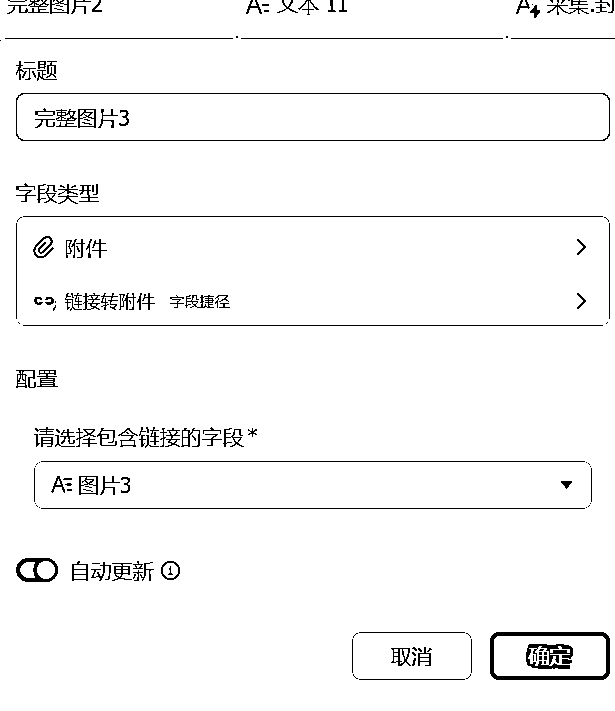
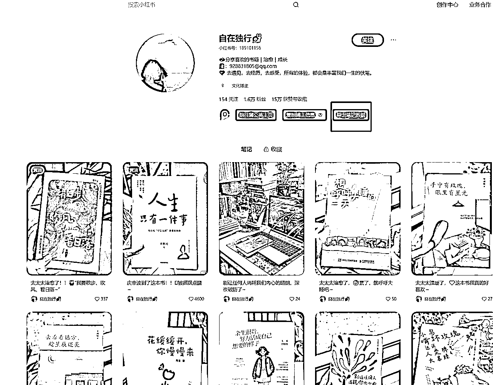

来源：https://u604y5x4sg.feishu.cn/docx/BqfWdiyzOocDiQx0s2tcWJi0nDh
你好，我是哆元
采集需求是一个公共需求，很多人都需要，也有很多解决方案，比如有 coze 工作流的，有采集插件的，有采集系统的等等，但是有的不是有使用门槛，就是有不低的付费门槛。
Deepseek 航海刚刚结束，相信很多圈友也了解到了多维表格的用法，其中我在手册里也讲到过一个采集插件，但是这个插件的缺点就是无法采集图片，那我们想要采集下来图片怎么操作呢，这篇我们就来解决这个问题，希望能够帮到大家。
我们来到多维表格，新建一个数据表，如下，最下面会共享这个表格给大家使用。
然后新增第二列，找到字段捷径中心的小红书助手
点击后确定，会出现如下设置，我们首先要解决的是 API 这个问题，因为这个助手是需要花钱的，但是不贵，10块钱可以采集1000条，最下面也会说到不花钱的采集方法。
怎么配置呢，点击关联账号，其他所有的 API 配置也都是这个流程，然后可以看到一个图标，点击就是配置网站和步骤了
点击后可能需要登录邮箱，往下翻就是直接购买了，购买后上面的API密钥就可以复制使用了
然后就粘贴到这里确定就行了
就会有你的账号选择了，记住后面开新的数据表或者新的任务要用到这个API的时候需要手动关联账号选择一下账号。
那我们就配置好了，接下来就选择我们放链接的所在列就行。
至于这个cookie，我是没有配置的，也可以配置，配置就看这个图片
cookie是什么意思呢，我用豆包做一下降维处理给大家学习
接下来我们看采集选项，我们采集图片的关键就是这个图片列表和封面图链接，区别是什么，列表就是所有图，封面图就是封面。

但是但是但是，我们最多只能采集5张图片，也就是6张图片就会出现下面这种报错，所以如果你的图片是六张以上的，就不行了，但是封面还是可以采集到，不过也有办法解决，下面会讲到。
OK，我们点击自动更新，后面新增链接就会自动采集了。
然后就可以把链接放进去了，这里我们随便找一个五张以内的小红书做测试，比如下面这个
直接复制右下角的转发链接的按钮就行，然后都不需要你去把中文去掉，直接粘贴就行，就开始采集了
不到10秒就下来了
但是这个也没看到图片呀，只是链接，这个链接其实就是图片的地址链接，我们在前端代码也能找到这个地址
当你双击这个地址，然后复制下来开新窗口打开就是图片
OK，也就是说飞书多维表格帮我们把图片地址采集下来了，那我们要这样才能查看吗，那也太复杂了是吧，肯定不是，接下来我们来到多维表格，在图片列表右侧新增一列，这个我们用来导出对应的图片
然后我们输入链接转附件，这个插件就是把链接转成图片的
输入后，选择图片列表选项，你选择封面就是将封面的链接弄成图片
然后勾选自动更新点击确定，然后我们看他就自动从文本变成附件格式了，然后5秒不到，图片都下来了，还是那句话，5张以上的图会失败，5张以上的图我们只能采集封面。
那我们想采集所以的图片怎么办，比如这个有12张
还是老办法，我们复制链接前往多维表格
哦豁确实是出错了，意思就是这个插件他只能处理5张以内的。
那我们点击一下图片列表，他其实就是每一张图片的链接地址，12张图就有12个链接地址
这可咋整，其实我们把这12个链接拆分成5+5+2是不是就好了，这里我们需要用到信息提取这个插件
接下来我们在图片列表右侧新建一列，先给他改成图片1，然后找到信息提取这个，选择字段为采集图片列表，然后输入提取信息为：提取前5个链接地址
然后勾选自动更新，就点击确定，我们就可以看到他就提取下来了，然后将完整图片那一栏的提取字段改成图片1
也就是你提取哪个就作用于哪个字段就行
那我们现在是成功采集到了任何图片数量的5张图，后面的几张逻辑是一样的，我们在图片1后面新增一列为图片2
然后提取信息为：从第6个链接开始提取5个，如果没有第六个链接就输出为空，如果有第六个链接，就从第六个开始提取5个，如果不足5个，有多少提取多少
看看效果，完成了我们想要的
然后我们在完整图片1右侧新增一列，开始作用于图片2
点击确定，那么我们后5张图片出来了

接下来我们采集大于10张的图，同样在图片2右侧新增一列为图片3，然后提取信息为：
从第11个链接开始提取5个，如果没有第十一个链接就输出为空，如果有第十一个链接，就从第十一个开始提取5个，如果不足5个，有多少提取多少
OK，就完成了，我们还看到没那么多图片的会说明由于只有5个链接就提取不到
接下来我们在完整图片2右侧新增一列为完整图片3

然后就采集到了完整的12张图了
所以人是活的规则是死的
由于有的图片不止12张，后面的提取信息的关键词怎么写呢，哆元帮大家理一下
从第6个链接开始提取5个，如果没有第六个链接就输出为空，如果有第六个链接，就从第六个开始提取5个，如果不足5个，有多少提取多少
从第11个链接开始提取5个，如果没有第十一个链接就输出为空，如果有第十一个链接，就从第十一个开始提取5个，如果不足5个，有多少提取多少
从第16个链接开始提取5个，如果没有第十六个链接就输出为空，如果有第十六个链接，就从第十六个开始提取5个，如果不足5个，有多少提取多少
从第21个链接开始提取5个，如果没有第二十一个链接就输出为空，如果有第二十一个链接，就从第二十一个开始提取5个，如果不足5个，有多少提取多少
大家找规律就好了
接下来我们找一个做测试，比如这个18张图
18张图我们就要做4道处理了，因为他是5+5+5+3，哆元这边是做好了
然后直接粘贴链接，他就一个流程化的自动处理出来了
那这个需求就解决了，但是现在我们是一个一个链接进行采集，能不能批量呢，是可以的，我们可以批量采集作者的所有链接，这里用到扩展程序的社媒助手插件就可以
那么这个插件怎么下，经常用到插件的朋友应该知道，浏览器有个扩展程序这个东西。
进入到扩展程序
打开开发者模式
然后进入到应用商店，如果是谷歌，那么需要网络，搜索社媒助手，进行安装即可
那么我们不管是在小红书还是在抖音，都会有关于这个插件的按钮
比如下面是小红书的，点进去单篇笔记，他就可以下载笔记，复制信息，导出评论
导出评论很重要（虽然哆元有写一个评论采集油猴插件，但是里面的图片没能够导出为原图无水印，这个地方就可以解决这个问题，所以大家先导出原图无水印的小红书或者抖音图片就可以使用这个插件，只想纯文本，就可以用哆元写的油猴插件）。
然后点进去主页，就可以批量导出账号的数据了
在抖音也是如此，记住是抖音网页版，那我们选择一个账号，比如下面这个读书号，点击导出笔记数据

就会可以选择导出多少条，这里做演示就10条吧
右下角就有进度

然后导出数据，你会惊奇的发型这个插件和上面10块钱那个小红书助手是差不多的，而且也有图片地址，那我们其实可以直接用社媒助手插件采集，然后导入到多维表格做链接转图片的操作就行了，这就省下来了那个钱。
缺点是什么呢，不能个性化自定义的去采集数据，然后你每一次导入多维表格都需要配置一下，如果你是直接采集账号下的笔记且不想花那个十块钱，就可以这样操作。
那我们其实得到这个表格，就可以把他前面的小红书链接那一列复制一下
然后直接在我们做好的多维表格里粘贴就可以，就能看到几秒就采集了
注意粘贴的时候，是点击一下表格，不是双击成下面这种状态，下面这种就会都打到这个表格里了
是这种
然后图片也是都下来了
上面是采集账号，那我们是采集那我们还可以配合上面哆元说的油猴插件去操作
因为我们找对标有几种方式，可以全部采集下来做筛选，也可以在刷的过程中做筛选（推荐这个，因为刷笔记是在锻炼自己的分析能力）。
所以用那个油猴插件，看到好的就采集一下，插件在这里安装
这里哆元举个例子，比如我想分析一下新疆旅游素人文案，就是采集这种笔记
OK，哆元就采集5篇下来
然后还是老办法，我们直接复制这个链接到多维表格就OK，就都出来了
那我们这个需求不管是怎么操作，都能解决了，如果你想个性化的去操作，就按照哆元上面那个思路去操作就好。
大家点击后，点击创建副本就行，然后就该配置配置，不想弄这个小红书助手就去社媒助手采集也行，但是缺点就是你每一个表格都需要重新配置一下，如果用小红书助手，就是一劳永逸了。
OK，就到这里完成了采集动作，多维表格的插件还有很多，可以去逛一逛，然后数据采集下来了，怎么做分析就用其他AI操作了，比如洗稿也好原创也罢都是可以的，这个我之前也讲过不少。
我是哆元，专注 AI 小红书，这是过往发在生财的文章，有兴趣也可以学习